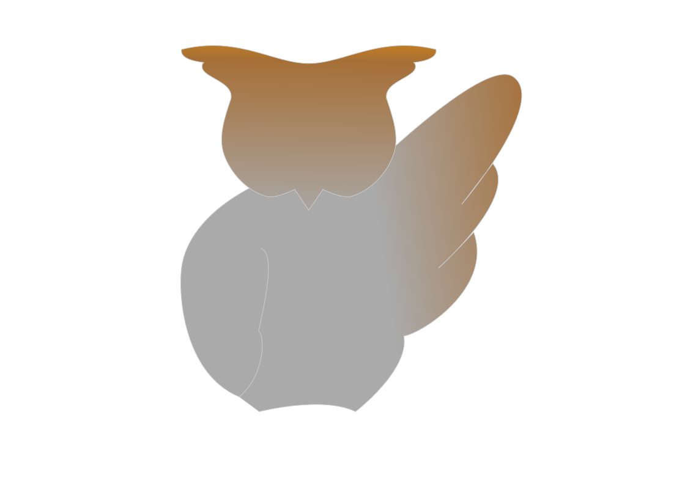
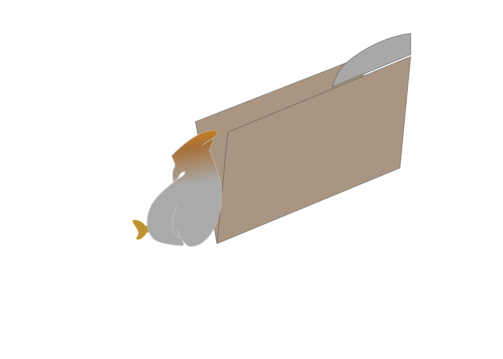
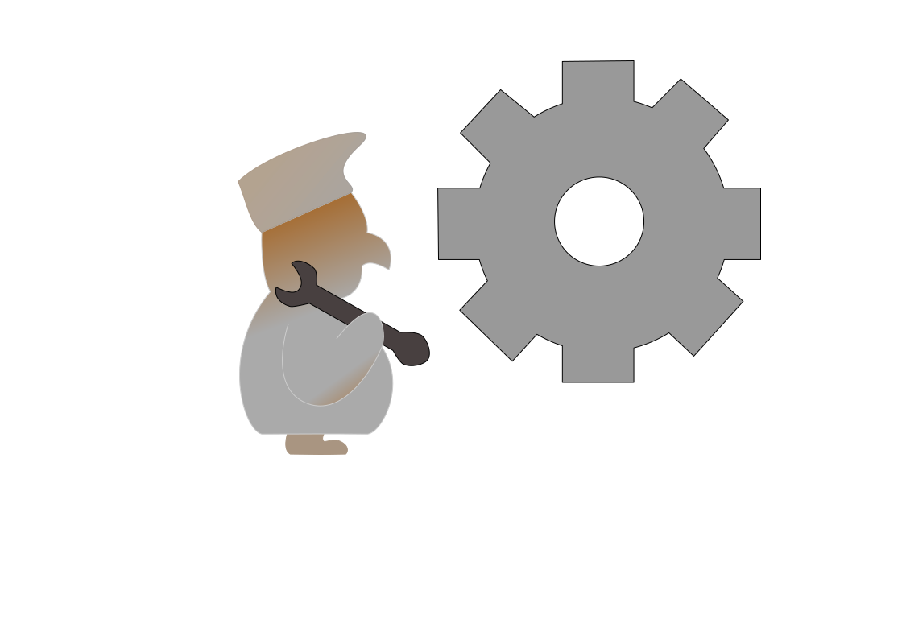

Bienvenidos al espacio educativo Fukubo en este entorno podrán investigar, aprender, y formase en los ámbitos que desean.

Te daremos una serie de apoyo en tus materias por medio de información creada y sintetizada de tal manera que sea más fácil su aprendizaje.

Queremos crear un ambiente amigable para el estudio, queremos que el aprendizaje se expanda y por eso te mostraremos una serie de páginas que te ayudaran con tus metas, de estas también pueden partir el contenido.

La página estará en constante chequeo para dar una optimización al estado de esta, así como se responderán inquietudes y sugerencias para su mejora. Nuestro objetivo principal es que el contenido mostrado se aproveche al máximo, por eso también invitamos a ver las fuentes de este contenido.